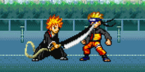
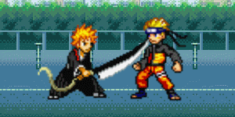

欢迎来到[术语词典]部分，在这里你将会学习到游戏内不同操作的专业术语叫法， 可以快速帮助自己建立游戏的完整认知！在本术语中， 笔者对于贴吧的专业叫法在其之后增设[*PS]语句，该语句将以通俗易懂的语言对其进行描述。
命中
我方技能、辅助在攻击或者判定到对方的被打面时，能使其受到一定程度的状态影响。
*注：命中分为三类，分别为：真命中，假命中，伪命中。
真命中
我方在攻击到对方之后，能使对手进入或保持受击僵直的情况，称为真命中。

假命中
我方在攻击到对手之后，对手依旧能保持防御状态的情况，称为假命中。

伪命中
一些附带捕捉或锁定效果的攻击，在被对手的被打面或者攻击触发该效果之后， 后续没有命中对手的情况， 如卍解小白i（可在即将触发二段攻击的时候进行瞬步躲避， 并籍此固定其落点、增长其后摇，而后进行反制）、 蓝染sj（可被一些技能利用自身纽瞬、纽跃的特性进行躲避）。 *注:一般语境中提到的"命中"代表真命中、假命中、以及打击到处于霸体状态下的对手这三种情况， 伪命中在描述的时候需要特别说明。
地形
分为以下4种：
墙角/版边
地图左右两边的最远处，身后紧贴墙角的人物将无法再后退， 墙角可能会使某些其他地形下不成立的连招成立，也可能会使某些其他地形下成立的连招无法成立。
地面
地图最下方无法向下跳跃的区域。
台阶/平台
地图中可以站立或向下跳跃的区域。通俗讲就是可以让我们跳上去继续打的类似于地面的地方。
空中
人物离开地面、台阶后处于的常规区域。
墙角推移
面向墙角且在墙角附近释放带有前移效果的技能后所产生的后撤效果。 部分突进技没有墙角推移（如剑八U）。墙角推移的距离主要取决于被攻击方所处的位置。 墙角推移可能会使某些其他情况下成立的连招无法成立。
纽带
一个技能快速连接或打断另一个技能的能力。
纽带性
可以连接或打断其他技能的性质。
纽瞬
即技能后连接瞬步的纽带，可以自由选择瞬步方向。
纽跃
即技能后连接跳跃的纽带，不可自由选择起跳后人物朝向。
瞬杀
即瞬步后连接必杀技的纽带，部分人物没有这个纽带。 3.0+版本中，只有当人物在瞬步过程中处于地面或台阶上时，这个纽带才成立。 （起跳至上层台阶高度而不跳上台阶，此时立刻空瞬也能够触发瞬杀）.
瞬辅
瞬步连接辅助的纽带，即人物可以在瞬步后摇结束前释放辅助。
受身/快速起身
迅速脱离击倒状态的快速起身效果， 同时也是一种纽带。被击倒后在一段时间内按下瞬身可以提前进入受身， 某些人物的受身具有攻击效果（如李洛克、白一护、二段带土）。 部分角色的受身存在僵直。受身消耗较少（约为瞬步2倍）耐力条。 受到砸地技能击倒后无法使用受身。
防御
游戏中基础操作之一，即为1P默认的S键，2P的↓键。在3.0及之后的版本中， 防御来自对方的一般攻击会消耗自身的耐力值。
防御状态
一种通过防御后进入的，使所受伤害减少至1/10且不会因受到攻击而进入硬直状态的状态。 在防御状态中可以自由按住方向键来改变防御方向来防御身后的攻击。
防御惩罚
人物处于防御状态时，受到某些技能攻击会受到更多伤害的判定事件。
PS : 此效果仅在 3.0 版本之前的 卡卡西 角色中出现。
防御类型
人物处于防御状态时，受到某些技能攻击会产生不同的特效和音效， 根据产生的特效和音效的不同，分为不同的防御类型，是属于人物源文件中定义的一个属性。
僵直
也叫硬直，分为以下五种：
受击僵直
我方的技能真命中对方后，对方陷入的除灵压爆发、替身术外无法进行任何其他操作的时间。
前摇/术前僵直
释放技能前，从输入指令到技能效果出现需要等待的时间。
术中/术时僵直
释放技能后，技能效果持续时间内无法转接纽带或无法使用幽步的时间。 通常情况下，i系技能无法使用幽步解除术时僵直，而当人物处于空中时则可以。
后摇/术后僵直
技能效果结束后（包括结束时）人物处于的状态。通常可以利用纽带或幽步来解除后摇， 但在纽带性出现前或纽带性结束后的后摇只能用幽步解除。
防御僵直
被对手某个技能的多段攻击假命中，或被对手的重击攻击假命中时， 在解除防御逃脱之前需要等待的时间，为防御僵直。
PS:前摇/术前僵直、术中/术时僵直、后摇/术后僵直属于技能主动使用风险。 单刀原来也是僵直的一种，即灵压爆发的后摇和辅助的前摇。 在3.0版本更新之后，已经没有单刀了，谨以此条纪念bvn吧老一辈的先驱者们。
落地后摇
人物下落接触地面到恢复站立的时间。有j、k、O等技能的纽带。
落辅
在人物处于，仅能够进行左右位移的操作的下落状态时， 可以比正常下落更早地在落地后摇时使用辅助。
受击唯一性
指不同攻击同时作用于同一个人物时，短时间内只会生效其中一个的性质。
起手
后续可进行连招的行为。
起手能力
技能主动使用风险越小，技能后续可进行的连招伤害越高，人物或技能的起手能力就越强。
捕捉/捕捉能力
在一定范围内释放能够锁定对手位置，使人物发生对应位移的能力或行为。 捕捉通常无明显轨迹，且一般附带攻击过程。带土U不附带攻击。
抓/抓取
攻击处于僵直的对手的行为。
锁定/锁定能力
区别于捕捉，释放者本身不发生对应位移的情况下， 在一定范围内释放能够锁定对手位置的技能的能力或行为。 锁定通常无明显轨迹，且一般附带攻击过程。
突进
在一定时间内向前移动一段距离的能力或行为。
后撤
在一定时间内向后移动一段距离的能力或行为。
吸附
不需要假命中即可强制使对手向我方人物位移的能力或行为。
拉取
技能真命中时，强制使对手向我方人物位移的能力或行为。
排斥
不需要假命中即可强制使对手远离我方人物位移的能力或行为。
击退/推移
技能真命中或假命中时，强制使对手远离我方人物位移的能力或行为。
击飞
技能真命中时，强制使对手向空中位移的能力或行为。
击倒
技能真命中时，强制使对手倒地的能力或行为。
击倒状态
人物被击倒时进入的状态。
砸地
一种不可受身的击倒效果。
*PS：被拥有该效果的技能命中后，将无法通过按下”L”按键进行快速起身。
反制状态
进入被攻击时触发攻击的判定状态。
反制技反制
触发反制状态。
反制
反手制裁对手某些套路和技能的能力或行为，一般附带后手预判的过程， 如金鸣通过走-瞬-A的方式反制剑八U。
落点
人物结束一段位移，或从空中落下接触地面和台阶时，其身处的位置为落点。
浮空
分为以下三种：
被攻击真命中击飞至空中的状态。
被攻击假命中推移下台阶进入下落的状态。
人物离开地面、台阶后处于的状态。
滞空
停留在空中。
急降
从空中快速向下位移的能力。
制空/对空/袭空
打击处于空中的对手的能力。
跃断
指人物在一段跳至最高点即将下落时按下ki，之后在落地前的任意时刻， 都可以使用二段跳打断ki的所有僵直的行为。 该操作可以配合性能优秀的ki在空战中迷惑和引诱对手，或者直接应用到连招中去。
破防
通常意义下的破防是指，打空对方耐力条后，再进行任意真命中达成的破防行为。 可以被灵爆和替身。
背破/背击破防
指通过攻击对手背后，可以无视其防御状态直接真命中对手的能力或行为。可以被灵爆和替身。
投破/投技破防
使用投技无视对手防御状态直接真命中对手的行为。无法进行灵爆和替身。
正破/破防技破防
正破/破防技破防：使用可以进行高额耐力削减的技能（大多为2.6时代的破防技）直接真命中对手，或先削减对手耐力再破防的行为。无法进行灵爆和替身。
*PS：通常情况下，每次防御住破防技能时（即还未被破防时），会削减固定 90 点耐力值。
无敌状态
一种不受任何伤害以及大部分技能效果影响的状态。 通过部分技能可以进入无敌状态。部分技能可以影响或锁定处于无敌状态的敌人， 如一段带土wi的吸附，蓝染i的全程锁定。
黑屏/时停
可通过释放辅助、灵替、幽步与某些I系技能来进入此状态，一般不同黑屏会按顺序发生， 假如两方同时进入黑屏，那么这个黑屏的结束时间就以先结束的黑屏为准。 黑屏时一般都附带时停效果，期间双方人物处于无敌状态。
耐力系统
3.0中新增的重要系统，瞬身，幽步，防御对方攻击，受身，灵压爆发与替身术都会消耗耐力值。 耐力槽有红色，蓝色，闪红三种状态，耐力槽在蓝色与闪红状态下恢复速度较快， 在红色状态下恢复速度较慢。无耐力状态下防御时受击则强制进入破防状态并后退一段距离。 受到真命中攻击时耐力会快速恢复。受身，瞬步，幽步，防御对方攻击， 替身与灵压爆发都会消耗不同的耐力值，不同情况同个技能的消耗也有所改变。 另有独特的人物具有比一般人物长的耐力条（例如雨龙）。
瞬身/瞬步
游戏中基础操作之一，即为1P默认的L键，2P的数字3键。 每次瞬身消耗少量耐力条，不足则全扣，在空中也可以进行瞬步操作，但消耗比平地瞬步稍多。
瞬身状态
一种通过上述瞬身操作进入的状态，在该状态下人物可以位移一段距离， 并在期间赋予人物一定时间的无敌状态，通常都有后摇。
幽步
游戏中基础操作之一，即为1P默认的W/S键+L键，2P默认的↑/↓键+3键。 可以暂停时间，并时人物在横轴上向对手移动，在竖轴上向上或向下移动， 之后恢复时停效果。横向幽步满耐力条需耗费0.6格气，并消耗大量的耐力值， 如果耐力条处于闪红状态时也可释放但消耗所有耐力条。 竖轴向上的幽步在满耐力条时，若人物跳跃上升时或在平地站立时消耗耐力更多， 其余时间消耗与横幽步相同；竖轴向下的幽步消耗与平地消耗相同， 但直到落地前人物无法进行任何操作。
灵压爆发/灵爆
在受到攻击时按释放辅助的键（默认为1P的O，2P的数字6）发动。 发动过程中人物有短暂的无敌状态，对方受到伤害并被弹开，之后自身立刻恢复到站立状态。 需耗费1格气，并清空自身耐力槽。耐力条低于一定值时无法使用。灵爆不受时停影响。
替身术/替身
在受到攻击时按释放辅助的键（默认为1P的O，2P的数字6）发动。 我方人物迅速进行一段横轴(x轴)位移，且纵轴(y轴)位置保持不变， 之后自身立刻恢复到站立状态或短暂滞空状态。需耗费1格气，并清空自身耐力槽。 耐力条低于一定值时无法使用。
灵替
灵压爆发和替身的统称。
灵幽
在low画质以外的画质，由于灵爆不受时停影响， 灵爆时主动幽步可取消灵爆的伤害，避免击倒对手。
滑步
从台阶上使用的技能，即使自身离开台阶进入滞空状态，技能也不会因此中断。 （如蓝染在台阶边缘发动wj，wj不因落下台阶而中断）
拼招/对碰
3.0中双方攻击并且使双方的伤害帧同时出现时， 双方都会进入受击状态或击倒状态，具体哪种状态由碰撞时对方技能效果决定。
技能相性
两个人物之间在分别使用某一个技能时， 根据双方位置、出招时间、是否处于防御状态等条件的不同， 产生的不同拼招结果。
buff机制
具体可以分为辅助buff与人物buff两种， 辅助buff生效表现为人物的底座出现旋转的圆圈， 而人物buff生效则表现为其本体发光。
辅助 buff
速度buff/加速
呈现效果：蓝底座， 功能：暂时增加人物移动速度数值，可能影响人物一些技能的位移或飞行道具的运动。
攻击buff/增伤
呈现效果：红底座， 功能：暂时增加人物造成的伤害。
防御buff/减伤
呈现效果：黄底座，功能：暂时减少人物受到的伤害。
人物 buff
钢身/霸体/白钢
呈现效果：人物外围泛出白光， 功能：此期间人物不会被i系技以外的技能打断技能动作。
注释：在此期间受到伤害会按一定比例减免伤害并扣除相应的耐力条， 当耐力条为0时普通钢身自动失效。
超级钢身/超级霸体/金身
呈现效果：人物外围泛出黄光， 功能：此期间人物不会被任何技能打断技能动作。
注释：在此期间受到伤害会按一定比例减免伤害并扣除相应的耐力条， 但即使耐力条降为0超级钢身状态也不会因此消失。 [*PS：与“钢身”技能相比，“超级钢身”技能可以获得更多的伤害减免， 并且可以减免“必杀”系技能所造成的伤害，而“钢身”技能则不可以]。
钢六式
指钢身的六种形态及其用法。
闪现
特指3.3更新后重置的夜一辅助。
人物分阶
对单个人物综合水平的大致估排，由多种因素决定， 总共分为 L1 - L7 和 Lgod 神仙阶/小黑屋）八个阶层。
伤害能力
由人物本身的技能伤害输出所决定的一项能力。伤害能力会影响人物分阶。
集气能力
由人物本身的JU两系技能空放集气量，和JU两系技能伤害能力所决定的一项能力。 集气能力会影响人物分阶。
闪避性
由人物的瞬身状态持续时间、瞬身僵直时间、瞬身距离、捕捉技、无敌技等决定的一项能力。 闪避性会影响人物分阶。
机动性
由人物的移动速度、瞬身、突进技、后撤技、捕捉技所决定的一项数值。 机动性会影响人物分阶。
人物克制
人物分阶为相对分阶，身处在不同阶层的人物之间仍然可能存在倒置的实力强弱关系， 这也会影响人物最终的分阶（例如A克制B，但B的相对综合实力较强，则会考虑把A和B放在不同的阶层， A分阶低而B分阶高）。
2p延迟
由于处于2p而导致一些与1p操作相同（不包括附带黑屏的操作或行为）但却出现延迟的情况， 如双方选择蓝染待机，设置双方j为同一键位后按下，会发现1p的j总能命中对手而2p不行。 又例如2p待机，1p幽步至2p位置处使用投技，2p无法进行任何操作。此条待修复。
1p延迟
由于处于1p而导致一些与2p操作相同（所有附带黑屏的操作或行为）但却出现延迟的情况， 如双方选择蓝染待机，设置双方i技为同一键位后按下，会发现1p的i技更晚释放。此条待修复。
技能
指A/DJ、A/DU、J、K、L、U、I、WJ、SJ、KJ、WU、SU、KU、I、WI、KI（仅限于某些角色)、 SI(零段不存在SI、KU）SK（下台阶）的总称。 其中，除K、L、SK以外，一般都为攻击型技能， 但类似带土u、蓝染sj等无法或未触发攻击的技能部分不算作攻击型技能。
投技/摔技
ADJ/U为投技，能够在对方处于防御状态下对对手进行破防攻击。 A/DJ不击倒，ADU一般击倒，A/DJ与A/DU真命中后的连招无法被替身/灵爆打断。
i系技能/i系技/大招/必杀
人物的i，wi，ki，si，其中SI又叫超必杀；一般只有在技能后摇时才可被幽步打断， 但当人物处于浮空状态时，i系技能全程可用幽步打断。
u系技能
人物的u，wu，su，ku。
j系技能
人物的j，wj，sj，kj。
连招/组合技
通过利用纽带或幽步持续发动攻击，并保持hit数不变或使hit数增长的行为或属性。
断连
存在前后技能无法衔接连击数的一套连招，刻意断连可以构成一些特殊战术。 说明：故意利用对手在空中的无法防御状态使用断连是一种不道德的、不尊重对手的行为，不建议使用。
无限连
可以在一个或多个地形中，用一个或多个技能组成的连招无限循环攻击对手的一套连招， 大部分无限连的无限循环标准很容易看出，不容易看出的通常需要较多的连击数加以证明。 通俗点讲就是指可以一套循环连死的连招，为广义上的无限连。
重复连
在一套连招内，击倒对方前有出现重复的攻击型技能，并且重复技能均真命中对手的连招。 比赛中，重复连即为狭义上的无限连，规则内一般明令禁止使用。
伪无限连
出现重复连但也存在断连的使对面难以逃脱的连招。 说明：不推荐在实战中使用伪无限连。
幽连
在技能真命中对手后，发动幽步强行打断技能僵直，之后发动其它技能所构成的特殊连招。
短幽连
在连招起始的第一个普攻的第一下攻击，或连招起始的第一个攻击型技能之后（参见1条目）， 使用唯一的一次幽步来衔接连招的行为。 在比赛中，仅允许使用短幽连类型的幽连，且配合重复连规则， 要求整个短幽连中依然不能出现任何攻击型技能的重复。
灵幽连
在连招过程中被对手舍身辅助真命中，使用灵爆之后立即幽步继续连招的行为。 在比赛中，此条一般看作特殊短幽连，且配合重复连规则，要求整个灵幽连中依然不能出现任何重复。
长幽连
除短幽连以外所有的幽连。
无限幽连
指用于幽步的0.6个气能够在连招过程中被回收，从而构成无限次循环的幽连。 属于广义无限连范畴。
辅助连
指在连招过程中释放带有攻击效果的辅助的行为。 连招开始前释放辅助，或以辅助作为连招的收尾，不算作辅助连。 在比赛中，辅助连是禁止的行为。